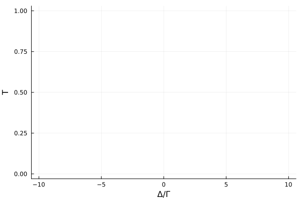

Cavity Antiresonance
In this example we investigate a system of $N$ closely spaced quantum emitters inside a coherently driven single mode cavity. The model is descriped in D. Plankensteiner, et. al., Phys. Rev. Lett. 119, 093601 (2017). The Hamiltonian of this system is composed of three parts $H = H_c + H_a + H_{\mathrm{int}}$, the driven cavity $H_c$, the dipole-dipole interacting atoms $H_a$ and the atom-cavity interaction $H_\mathrm{int}$:
\[\begin{align} H_\mathrm{c} &= \hbar \Delta_c a^\dagger a + \hbar \eta (a^\dagger + a) \\ &\\ H_a &= \hbar \Delta_a \sum\limits_{j} \sigma_j^{22} + \hbar \sum\limits_{i \neq j} \Omega_{ij} \sigma_i^{21} \sigma_j^{12} &\\ H_\mathrm{int} &= \hbar \sum\limits_{j} g_j (a^\dagger \sigma_j^{12} + a \sigma_j^{21}) \end{align}\]
Additionally the system features two decay channels, the lossy cavity with photon decay rate $\kappa$ and collective atomic emission described by the decay-rate matrix $\Gamma_{ij}$.
We start by loading the packages.
using QuantumCumulants
using OrdinaryDiffEq, SteadyStateDiffEq, ModelingToolkit
using PlotsThe Hilbert space for this system is given by one cavity mode and $N$ two-level atoms. Here we use symbolic indices, sums and double sums to define the system. The parameters $g_j, \, \Gamma_{ij}$ and $\Omega_{ij}$ are defined as indexed variables of atom $i$ and $j$. We will describe the system in first order mean-field.
# Hilbert space
hc = FockSpace(:cavity)
ha = NLevelSpace(Symbol(:atom),2)
h = hc ⊗ ha
# Parameter
@cnumbers N Δc η Δa κ
g(i) = IndexedVariable(:g,i)
Γ(i,j) = IndexedVariable(:Γ,i,j)
Ω(i,j) = IndexedVariable(:Ω,i,j;identical=false)
# Indices
i = Index(h,:i,N,ha)
j = Index(h,:j,N,ha)Index(ℋ(cavity) ⊗ ℋ(atom), :j, N, 2)
The kwarg ’identical=false’ for the double indexed variable specifies that $\Omega_{ij} = 0$ for $i = j$. Now we create the operators on the composite Hilbert space using the $\texttt{IndexedOperator}$ constructor, which assigns each $\texttt{Transition}$ operator an $\texttt{Index}$.
@qnumbers a::Destroy(h)
σ(x,y,k) = IndexedOperator(Transition(h,:σ,x,y),k)We define the Hamiltonian and Liouvillian. For the collective atomic decay we write the corresponding dissipative processes with a double indexed variable $R_{ij}$ and an indexed jump operator $J_j$, such that an operator average $\langle \mathcal{O} \rangle$ follows the equation
\[\begin{equation} \langle \dot{\mathcal{O}} \rangle = \sum_{ij} R_{ij} \left( \langle J_i^\dagger \mathcal{O} J_j \rangle - \frac{1}{2} \langle J_i^\dagger J_j \mathcal{O} \rangle - \frac{1}{2} \langle \mathcal{O} J_i^\dagger J_j \rangle \right). \end{equation}\]
# Hamiltonian
Hc = Δc*a'a + η*(a' + a)
Ha = Δa*Σ(σ(2,2,i),i) + Σ(Ω(i,j)*σ(2,1,i)*σ(1,2,j),j,i)
Hi = Σ(g(i)*(a'*σ(1,2,i) + a*σ(2,1,i)),i)
H = Hc + Ha + Hi
# Jump operators & and rates
J = [a, σ(1,2,i)]
rates = [κ, Γ(i,j)]We derive the system of equations in first order mean-field.
eqs = meanfield(a,H,J;rates=rates,order=1)
complete!(eqs)\[\begin{align} \frac{d}{dt} \langle a\rangle =& -1 i \eta -1 i \underset{i}{\overset{N}{\sum}} {g}_{i} \langle {\sigma}_{i}^{{12}}\rangle -0.5 \kappa \langle a\rangle -1 i {\Delta}c \langle a\rangle \\ \frac{d}{dt} \langle {\sigma}_{k}^{{12}}\rangle =& \underset{j{\ne}k}{\overset{N}{\sum}} {\Gamma}_{k,j} \langle {\sigma}_{j}^{{12}}\rangle \langle {\sigma}_{k}^{{22}}\rangle -0.5 \underset{j}{\overset{N}{\sum}} {\Gamma}_{k,j} \langle {\sigma}_{j}^{{12}}\rangle -1 i \underset{j{\ne}i,k}{\overset{N}{\sum}} {\Omega}_{k,j} \langle {\sigma}_{j}^{{12}}\rangle + 2 i \underset{j{\ne}i,k}{\overset{N}{\sum}} {\Omega}_{k,j} \langle {\sigma}_{j}^{{12}}\rangle \langle {\sigma}_{k}^{{22}}\rangle -1 i {g}_{k} \langle a\rangle -1 i {\Delta}a \langle {\sigma}_{k}^{{12}}\rangle + 2 i {g}_{k} \langle a\rangle \langle {\sigma}_{k}^{{22}}\rangle \\ \frac{d}{dt} \langle {\sigma}_{k}^{{22}}\rangle =& -0.5 \underset{i{\ne}j,k}{\overset{N}{\sum}} {\Gamma}_{i,k} \langle {\sigma}_{i}^{{21}}\rangle \langle {\sigma}_{k}^{{12}}\rangle + 1 i \underset{i{\ne}j,k}{\overset{N}{\sum}} {\Omega}_{i,k} \langle {\sigma}_{i}^{{21}}\rangle \langle {\sigma}_{k}^{{12}}\rangle -1 i \underset{j{\ne}i,k}{\overset{N}{\sum}} {\Omega}_{k,j} \langle {\sigma}_{k}^{{21}}\rangle \langle {\sigma}_{j}^{{12}}\rangle -0.5 \underset{j{\ne}k}{\overset{N}{\sum}} {\Gamma}_{k,j} \langle {\sigma}_{k}^{{21}}\rangle \langle {\sigma}_{j}^{{12}}\rangle -1.0 {\Gamma}_{k,k} \langle {\sigma}_{k}^{{22}}\rangle -1 i {g}_{k} \langle a\rangle \langle {\sigma}_{k}^{{21}}\rangle + 1 i {g}_{k} \langle a^\dagger\rangle \langle {\sigma}_{k}^{{12}}\rangle \end{align}\]
To create the equations for a specific number of atoms we use the function $\texttt{evaluate}$.
N_ = 2
eqs_ = evaluate(eqs;limits=(N=>N_))
@named sys = ODESystem(eqs_)Finally we need to define the initial state of the system and the numerical parameters. In the end we want to obtain the transmission rate $T$ of our system. For this purpose we calculate the steady state photon number in the cavity $|\langle a \rangle|^2$ for different laser frequencies.
u0 = zeros(ComplexF64, length(eqs_))
# parameter
Γ_ = 1.0
d = 2π*0.08 #0.08λ
θ = π/2
Ωij(i,j) = i==j ? 0 : Γ_*(-3/4)*( (1-(cos(θ))^2)*cos(d)/d-(1-3*(cos(θ))^2)*(sin(d)/(d^2)+(cos(d)/(d^3))) )
Γij(i,j) = i==j ? Γ_ : Γ_*(3/2)*( (1-(cos(θ))^2)*sin(d)/d+(1-3*(cos(θ))^2)*((cos(d)/(d^2))-(sin(d)/(d^3))))
g_ = 2Γ_
κ_ = 20Γ_
Δa_ = 0Γ_
Δc_ = 0Γ_
η_ = κ_/100
gi_ls = [g(i) for i=1:N_]
Γij_ls = [Γ(i,j) for i = 1:N_ for j=1:N_]
Ωij_ls = [Ω(i,j) for i = 1:N_ for j=1:N_ if i≠j]
# list of symbolic indexed parameters
gi_ = [g_*(-1)^i for i=1:N_]
Γij_ = [Γij(i,j) for i = 1:N_ for j=1:N_]
Ωij_ = [Ωij(i,j) for i = 1:N_ for j=1:N_ if i≠j]
ps = [Δc; η; Δa; κ; gi_ls; Γij_ls; Ωij_ls]
p0 = [Δc_; η_; Δa_; κ_; gi_; Γij_; Ωij_]Δ_ls = [-10:0.05:10;]Γ_
n_ls = zeros(length(Δ_ls))
# definitions for fast replacement of numerical parameter
prob = ODEProblem(sys,u0,(0.0, 20Γ_), ps.=>p0)
prob_ss = SteadyStateProblem(prob)
p_sys = parameters(sys)
p_idx = [findfirst(isequal(p), ps) for p∈p_sys]
for i=1:length(Δ_ls)
Δc_ = Δ_ls[i]
Δa_ = Δc_ + Ωij(1,2) # cavity on resonace with the shifted collective emitter
p0_ = [Δc_; η_; Δa_; κ_; gi_; Γij_; Ωij_]
# create new SteadyStateProblem
prob_ss_ = remake(prob_ss, p=p0_[p_idx])
sol_ss = solve(prob_ss_, DynamicSS(Tsit5(); abstol=1e-8, reltol=1e-8),
reltol=1e-14, abstol=1e-14, maxiters=5e7)
n_ls[i] = abs2(sol_ss[a])
end┌ Warning: Assignment to `Δc_` in soft scope is ambiguous because a global variable by the same name exists: `Δc_` will be treated as a new local. Disambiguate by using `local Δc_` to suppress this warning or `global Δc_` to assign to the existing global variable. └ @ none:3 ┌ Warning: Assignment to `Δa_` in soft scope is ambiguous because a global variable by the same name exists: `Δa_` will be treated as a new local. Disambiguate by using `local Δa_` to suppress this warning or `global Δa_` to assign to the existing global variable. └ @ none:4
The transmission rate $T$ with respect to the pump laser detuning is given by the relative steady state intra-cavity photon number $n(\Delta)/n_\mathrm{max}$. We qualitatively reproduce the antiresonance from D. Plankensteiner, et. al., Phys. Rev. Lett. 119, 093601 (2017) for two atoms.
T = n_ls ./ maximum(n_ls)
plot(Δ_ls, T, xlabel="Δ/Γ", ylabel="T", legend=false)"/home/runner/work/QuantumCumulants.jl/QuantumCumulants.jl/docs/build/examples/cavity_antiresonance_indexed.svg"
